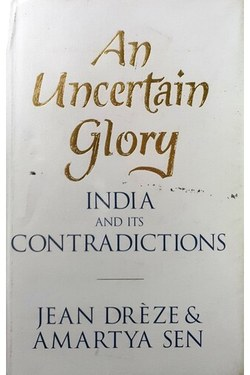

Library › History
An Uncertain Glory — Summary & Key Lessons

India's extraordinary economic growth has not become an extraordinary society — the book that asks why.
📖 OPEN THE FULL INTERACTIVE BREAKDOWN →🌐 Read it in Hindi, Hinglish, Gujarati, Tamil & 22 more languages — free, with audio.
💡 The Big Idea
Two of the world's leading economists argue that India's GDP story hides a human story of malnutrition, poor schooling, and persistent deprivation. Growth is necessary but not sufficient — public services, early-life nutrition and women's agency determine whether growth becomes freedom. Their method is the essence of good analysis: measure what matters, not what is convenient.
🧠 The 9 Key Lessons
Lesson 1: Growth Is a Means, Not the Goal
Chapter 1: The Argument
Sen and Dreze attack the assumption that rising GDP automatically improves lives. Growth creates resources; development converts resources into capabilities — health, education, voice. India's paradox: among the fastest-growing economies, among the worst childhood nutrition records. The lesson generalises: for your life or team, measure the outcome you actually want, not the metric that moves.
📖 Example: A startup's revenue can double while customer problems double too — growth without the right quality bar. Read the full example →
⚡ Do this: Name your real outcome (health, mastery, happiness) and pick one metric that actually tracks it.
Lesson 2: Early Childhood Is the Fulcrum
Chapter 2: Nutrition
The book shows that child undernutrition causes lifelong damage — to learning, earnings and health — and that the window of intervention is shockingly early. India's 'growth story' is undermined at its base: a malnourished child's brain can never fully catch up. The takeaway is leverage: invest in the earliest, most unseen stage.
📖 Example: Companies that help workers' children with nutrition and schooling get a steadier, healthier workforce a generation later. Read the full example →
⚡ Do this: Pick an invisible early-stage input in your world (seeds, habits, onboarding) and invest before the visible stage.
Lesson 3: Schools Teach, Systems Forgive
Chapter 3: Education
The authors' field studies show a classic 'broken feedback' problem: schools exist, teachers are present, but learning is not measured, so failure is invisible. When no one tracks whether a child can read, the system has no reason to improve. The antidote is audit with consequence — measure learning so that the system must respond.
📖 Example: A team that only measures activity (meetings held) without outcomes (results shipped) is a school that never checks reading. Read the full example →
⚡ Do this: Add one outcome measurement to a process you run — and schedule what happens if it fails.
Lesson 4: Voice Changes Policy
Chapter 4: Democracy and Public Action
The book's optimism rests on democratic voice: the poor are not just problems to be fixed, they are citizens who can demand. Their evidence: open political competition forces even reluctant governments to respond to famine and hunger. Information plus demands plus action — the same trio works in any organisation.
📖 Example: A company where frontline complaints are aggregated and demanded publicly fixes issues faster than one where they are buried. Read the full example →
⚡ Do this: Create one channel where real users or team members get a visible response within 48 hours.
Lesson 5: Women's Agency Is the Engine
Chapter 5: Gender
A repeated finding: regions with greater female education, employment and decision-making power show better outcomes for children, families and economies. Gender inequality is not just injustice — it is a development failure that drags every other indicator. Change the agency of half the population and the whole system improves.
📖 Example: Microfinance studies repeatedly find loans in women's hands improve household nutrition and schooling more than loans in men's. Read the full example →
⚡ Do this: In your domain, make one decision that increases the agency of those who currently have the least say.
Lesson 6: The Education Emergency: Schooling vs Learning
The State of Public Services
Dreze and Sen's sharpest evidence concerns education: India's schools are full and the learning is not happening — enrolment has soared while actual capability (reading, arithmetic) has flatlined or fallen. The gap between schooling and learning is the country's deepest infrastructure deficit: no bridge, road or power plant is worth more than a child who cannot read a text.
📖 Example: ASER-style surveys find a majority of class-five children in many districts who cannot do simple division — the building is full, the factory is empty. Read the full example →
⚡ Do this: Measure learning, not attendance, in your own life: one objective test of a skill this month instead of hours logged.
Lesson 7: The Miracle That Wasn't: Debunking the Growth Story
Chapter 8: The Great Indian Poverty Debate
Drèze and Sen dismantle the comfortable narrative: yes, India grew fast, but growth is not the same as development, and the 'miracle' hid persistent hunger, malnutrition and illiteracy on a scale no other fast-growing economy tolerated. The book's method is the lesson: measure what actually happened to people, not to GDP — the growth story and the human story can both be true, and the human story is the one that decides.
📖 Example: India's child malnutrition rates remained among the world's worst through three decades of 7% growth — the paradox that launched the book. Read the full example →
⚡ Do this: Before celebrating any 'growth' in your own life — income, followers, output — ask what the human indicators say: health, sleep, relationships, learning.
Lesson 8: The Classrooms of the Poorest
Chapter 7: Schooling and Learning
The book's schooling chapters are brutal evidence: enrolment soared, but learning collapsed — children in school for years who could not read a sentence. The explanation is systemic: teachers absent, curriculum irrelevant, accountability absent, and the poor paying for private schools because government schools failed. The lesson generalises: presence is not learning, attendance is not education, and institutions that reward inputs over outcomes produce the appearance of progress.
📖 Example: The famous ASER studies showed a majority of Class 5 children in rural India could not read a Class 2 text — the 'schooling revolution' was a building count, not a learning count. Read the full example →
⚡ Do this: Wherever you are responsible for growth — a team, a student, a habit — measure the outcome, not the attendance. The distinction is the entire book.
Lesson 9: The State as the People's Instrument
Chapter 10: The Role of the State
Drèze's political conclusion: the market cannot deliver public goods — health, education, nutrition — and a state that retreats from them abandons its poorest citizens to private providers who cannot serve them. The book's philosophy is not anti-market; it is a reminder that the state is the instrument through which a society decides its priorities, and the decisions show in the budget. The radical test: look at where a country spends, not what it says.
📖 Example: A government that spends ₹60 on defence for every ₹1 on nutrition has answered the question of its priorities without saying a word. Read the full example →
⚡ Do this: Audit your personal 'budget as policy': where does your money and time actually go? That is your real state — and your real priorities.
✅ 5-Step Action Plan
- Define your real outcome — then measure that, not the easy proxy.
- Audit one invisible early input and invest in it.
- Add consequence to one measurement (what happens if it fails?).
- Give one disempowered voice in your world a real and visible channel.
- For one opinion you hold, read the poorest district's view of it before you repeat it.
⚠️ When This Doesn't Work
The data sets are from the 2000s-2010s and India has moved since; some policy prescriptions are debated by other economists. The argument's method — measure outcomes, not inputs — is the durable takeaway.
💀 The Graveyard Proves It
✈️ Air Deccan — The Airline That Made Flying Affordable — Then Flew Into the Ground. Burn: Acquired at a fraction of its promise; the 'common man's airline' vanished into Kingfisher's debt Read the full case study →
💬 Best Quotes from An Uncertain Glory
- “Economic growth is not an end in itself — it is a means to the real ends of human development.”
- “The first step to progress is to see the problem clearly.”
- “Public action can change the social map — history is full of such transformations.”
Interactive version: mark lessons as read, listen in your language, share quote cards.